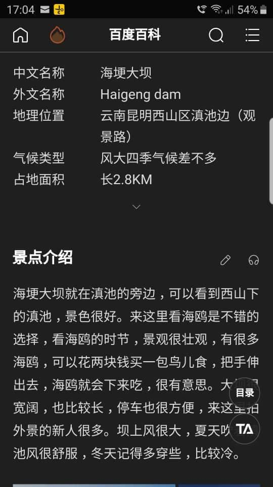
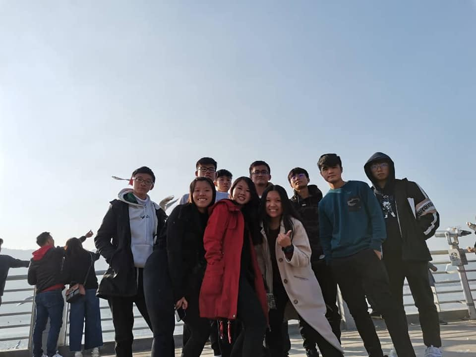
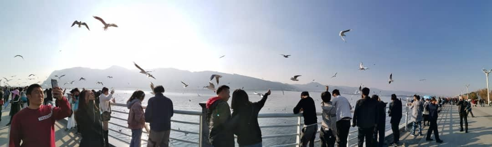
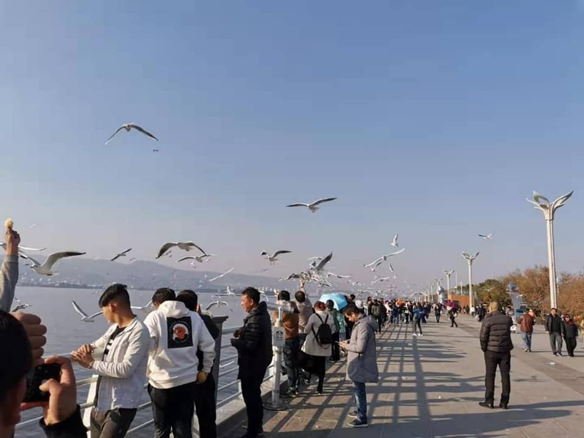
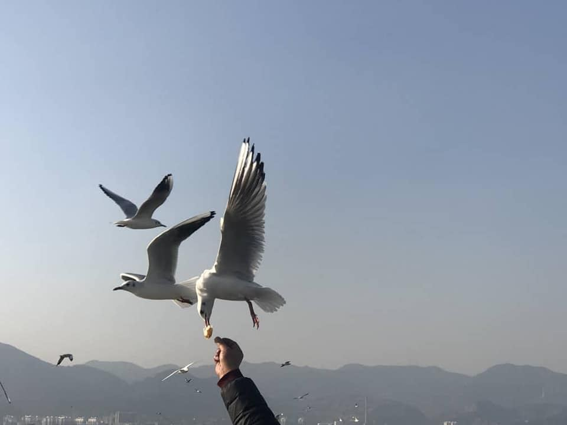
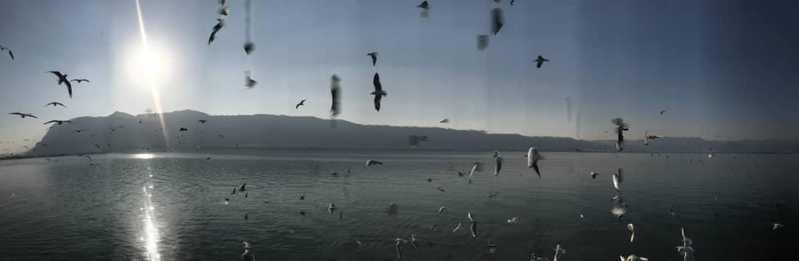

现在南华天使们来到了海埂大坝。它是昆明看海鸥的一个不错选择。地方宽敞，也没有门票
现在南华天使们来到了海埂大坝。它是昆明看海鸥的一个不错选择。地方宽敞，也没有门票。时值春夏交替，大坝旁开满了粉色的杜鹃，很是漂亮。大坝这边空气也比城里好很多。每年冬季成千上万的红嘴鸥从遥远的西伯利亚飞到这里，吸引了百万游客来参观这壮观的景象。






现在南华天使们来到了海埂大坝。它是昆明看海鸥的一个不错选择。地方宽敞，也没有门票。时值春夏交替，大坝旁开满了粉色的杜鹃，很是漂亮。大坝这边空气也比城里好很多。每年冬季成千上万的红嘴鸥从遥远的西伯利亚飞到这里，吸引了百万游客来参观这壮观的景象。





